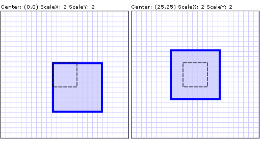

Практическое руководство. Масштабирование элемента
В этом примере показано, как использовать ScaleTransform для масштабирования элемента.
Используйте ScaleX и ScaleY свойства для изменения размеров элемента с определенным коэффициентом. Например ScaleX значение 1,5 увеличивает элемент на 150 процентов от его исходной ширины. Объект ScaleY значение 0,5 уменьшает элемент на 50 процентов.
Используйте CenterX и CenterY свойства для указания точки, которая будет центром операции масштабирования. По умолчанию ScaleTransform центрируется в точке (0,0), который соответствует верхнего левого угла прямоугольника. Это приводит к перемещению элемента, а также делает его размер больше, поскольку при применении Transform, измените пространство координат, в которой находится объект.
В следующем примере используется ScaleTransform размера 50 на 50 Rectangle. ScaleTransform Имеет значение 0 (по умолчанию) для CenterX и CenterY.
Пример
<!-- Scales a rectangle by 200% from a center of (0,0).-->
<Rectangle Height="50" Width="50" Fill="#CCCCCCFF"
Stroke="Blue" StrokeThickness="2"
Canvas.Left="100" Canvas.Top="100">
<Rectangle.RenderTransform>
<ScaleTransform CenterX="0" CenterY="0" ScaleX="2" ScaleY="2" />
</Rectangle.RenderTransform>
</Rectangle>
Обычно задается CenterX и CenterY относительно центральной части масштабируемого объекта: (Width/2, Height /2).
В следующем примере показан другой Rectangle который удваивается в размере; Однако это ScaleTransform имеет значение 25 для CenterX и CenterY, что соответствует центру прямоугольника.
<!-- Scales a rectangle by 200% from a center of (25,25).-->
<Rectangle Height="50" Width="50" Fill="#CCCCCCFF"
Canvas.Left="100" Canvas.Top="100" Stroke="Blue" StrokeThickness="2">
<Rectangle.RenderTransform>
<ScaleTransform CenterX="25" CenterY="25" ScaleX="2" ScaleY="2" />
</Rectangle.RenderTransform>
</Rectangle>
Ниже показано различие между двумя ScaleTransform операций. Пунктирная линия показывает размер и положение прямоугольника до масштабирования.

Две операции ScaleTransform с одинаковыми значениями свойств ScaleX и ScaleY, но с разными центрами
Полный пример см. в разделе Примеры двумерных преобразований.